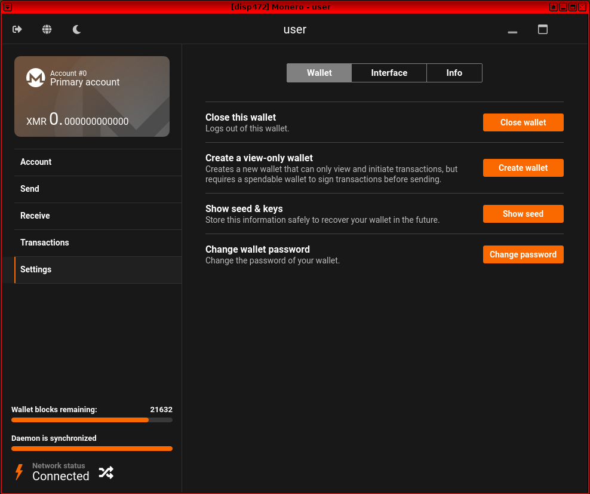

We believe security software like Kicksecure needs to remain Open Source and independent. Would you help sustain and grow the project? Learn more about our 14 year success story and maybe DONATE!
Trezor Hardware WalletDocumentationFile SharingPrevious page: Trezor Hardware WalletIndex page: DocumentationNext page: File SharingMonero (XMR): A Reasonably Private Digital Currency

Monero is a private-centric cryptocurrency launched in 2014 to allow direct and anonymous digital payments without being dependent on a central authority.
Installation Sources
There are many different options to install Monero. Choose one.
- A) Flathub: This is documented below.
- B) Manual installation: Undocumented but same as if using Debian. Therefore unspecific to Kicksecure. [1]
- C) Official Debian packages sources:
packages.debian.orgmonderdand command line interface (CLI) only. Monero graphical user interface (GUI) unavailable from Debian package sources.
Installation
Apart from these optional hints, installation and usage of Monero in Kicksecure does not differ from installing Monero on any Linux based distribution.
1. Allow unverified publishers.
Due to a Flathub issue, it is required to Change Flathub Settings by using the following command. See footnote for technical details. [2]
sudo flatpak remote-modify --subset=floss flathub
2.
Install org.getmonero.Monero via flatpak.
1 Sysmaint Notice

- A
If using
user-sysmaint-split: The user must boot into the sysmaint session. For details and instructions on how to do so, see user-sysmaint-split. - B If using unrestricted admin mode: This sysmaint notice does not apply. Continue with the steps below.
2 Add a Flatpak repository.
Select your platform.
Kicksecure
Already enabled by default. (system-wide). No additional steps needed to enable the Flathub repository.
Kicksecure-Qubes Template (kicksecure-18)
Already enabled by default. (system-wide). No additional steps needed to enable the Flathub repository.
Kicksecure-Qubes App Qube (kicksecure)
The user needs to Enable the Flathub Repository. Must be enabled per-user.
3
Install the flatpak org.getmonero.Monero
package.
Kicksecure-Qubes Template (kicksecure-18)
[4]
Note: Advanced users that uninstalled the
qubes-core-agent-passwordless-sudo package should see forum
thread Warning:
Flatpak system operation Deploy not allowed for user.
http_proxy=http://127.0.0.1:8082 https_proxy=$http_proxy flatpak install flathub org.getmonero.Monero
Kicksecure-Qubes App Qube (kicksecure)
[5]
flatpak --user remote-add --if-not-exists flathub https://dl.flathub.org/repo/flathub.flatpakrepo
flatpak --user install flathub org.getmonero.Monero
4 Done.
The procedure of installing org.getmonero.Monero is
complete.
5 Upgrades notice.
Note: this procedure will not keep the software up-to-date. How to update installation installed by flatpak is also documented on the Operating System Software and Updates wiki page.
3. Done.
Installation of Monero from Flathub has been completed.
Monero Operations
Start Monero GUI
1. Open a terminal.
Platform specific. Select your platform.
Kicksecure USER Session
If you are using a graphical Kicksecure with LXQt, complete the following steps.
Start menu → System Tools →
QTerminal
Kicksecure SYSMAINT Session
In the System Maintenance Panel, under the
Misc section,
click Open Terminal.Kicksecure-Qubes
If you are using Kicksecure-Qubes, complete the following steps.
Qubes App Launcher (blue/grey "Q") →
Kicksecure App Qube (commonly named kicksecure)
→ QTerminal
2. Monero GUI start command.
flatpak run org.getmonero.Monero
3. Done.
Monero GUI should be running.
4. Further information.
For detailed instructions on how to use Monero, please refer to the official Monero documentation.
Figure: Monero GUI in Kicksecure

Start Monero CLI
Alternatively, you could also use Monero on the command line.
flatpak run --command=monero-wallet-cli org.getmonero.Monero
Wallet-File Command Line Argument
This chapter is for advanced users only.
Advanced users using the --wallet-file need to first
grant access to the host file system.
Note: This command might be non-ideal. A finer permission
would be desirable such as only granting the
org.getmonero.Monero flatpak access to 1 additional folder.
Unspecific to Kicksecure.
sudo flatpak override org.getmonero.Monero --filesystem=host
To run Monero CLI flatpak using the --wallet-file see
the following example.
Note: Adjust path to wallet file.
flatpak run --command=monero-wallet-cli org.getmonero.Monero --wallet-file /home/user/path/to/wallet
Other command line parameters can be appended if required.
Note: This results in Monero using folder ~/.bitmonero
instead of ~/.var/app/org.getmonero.Monero/.bitmonero as
per https://github.com/monero-project/monero-gui/issues/3929#issuecomment-2437133065
Remote Node Security and Privacy Considerations
Using a remote node provides a quick way to set up your Monero wallet. You will not have to download the entire blockchain.
It is important to note that the remote node:
- cannot spend your XMR (you hold the keys);
- does not know your IP address (we are connecting to it over Tor);
- does not know your XMR address; and
- does not know your balance or private view key.
However, using a remote node is not without risk. To learn more about the possible attacks, see: https://web.archive.org/web/20230331040213/https://moneroworld.com/
In general, if the wallet warns you about the node misbehaving, then immediately exit the wallet and connect to a different node.
Donations
After installing Monero, please consider making a donation to Kicksecure to help keep it running for many years to come.
 Donate Monero (XMR) to Kicksecure.
Donate Monero (XMR) to Kicksecure.
84ozcSohQfoV6nRgGfaQ8uBvWphXAH8zDTTuotVnJWF1JMNQfvgNFdbEo4ZnJ9hxPMeYfJuUoWGH3MRaXCfbYk8sFFgm4XL
Appendix
Monero Architecture
Monero works by having contributors host large files which are equivalent to a public ledger. Any time someone broadcasts a transaction, every ledger maintainer updates their copy of the ledger and ensures no cheating or fraud has occurred. As with most cryptocurrencies, transactions are sent to Public Addresses which are derived from personally created private keys.
Since transactions could otherwise be traced by watching which addresses are sending to each-other, Monero uses a Diffie-Hellman key exchange using the transaction information on the sender's side and the public address on the receiver's end of a transaction to encrypt the recipients address on the ledger. To protect the sender, spending Monero is equivalent to forwarding the output of the previous transaction, so a users address is never stored on the ledger at all - this technique is called Stealth Addressing.
Since this solution is imperfect, and allows EABE attacks and is dependent on ECC for the key exchange, Monero uses a second layer of anonymity called Ring Signatures. When signing a transaction and broadcasting it to the network, Ring Signatures take signers from previous transactions and forge a new signature with Ring Size = N, where you cannot tell which entity in the group N actually authorized a transaction. This further obfuscates the blockchain and reduces the available attack vectors on the cryptocurrency as a whole, as well as introduces several zero knowledge proofs which prevent absolute analysis of the ledger.
Ring Signatures combined with Stealth Addressing prevent many attack vectors, but since new transactions are forwarded outputs from previous ones you can still perform analysis by viewing the amounts spent on-chain. To address this potential issue, a solution called RingCT was introduced which obfuscates the amount spent in a transaction.
Further attack vectors including cross-referencing an address posted in multiple places and IP leaks when connecting to the network are further developments sought out by the Monero community. These potential issues are addressed with Subaddresses and Kovri respectively.
monero-gui Debian Package
Project Monero Debian Package Repository for 2 years is no longer available. No extension request is planned.
In technical terms, the previously pre-installed version of Monero in
folder /usr/bin is no longer available.
As a replacement, it is recommended to use the official Monero Flatpak installation method which is documented above.
Footnotes
- Maybe Monero, Manual Instructions could be updated and ported to Kicksecure wiki.
- The Flathub repository has been enabled by in Kicksecure by default
but with the subset
verified_floss, which allows only applications that are both,verifiedpublishers andfloss(Freedom Software). Monero isflosshowever there is an issue withverified. This issue is happening because Monero Flatpak did not receive the verified badge from Flathub yet due to delays caused by Flathub. If not enabling unverified publishers, the following issue would happen. zZmwstaticVERBATIMzZ0zZ If the user is able to install Monero without allowing unverified publishers then this is very good and might mean that Flathub finally added Monero to the list of verified publishers. - Kicksecure: * A) system-wide (requires administrative ("root") rights) (compatible with noexec): flatpak install flathub org.getmonero.Monero * B) per-user (no administrative rights required) (probably not compatible with noexec): flatpak --user install flathub org.getmonero.Monero What is better? System-wide or per-user? * usability: Flathub is enabled by default system-wide but not per-user. * multi-user: On a multi-user system (probably if multiple human users use the same computer, which is rare nowadays), system-wide might be preferable as this saves disk space. * At present: Does not make any difference. * Future-proof: Per-user might be more future-proof. It would be compatible with future Kicksecure security improvements user-sysmaint-split. However, noexec for the home folder is to be considered later, at which point this documentation needs to be updated once that has been implemented.
- Kicksecure-Qubes Template:
flatpakcannot be used with the--useroption. This is because in case of using a Qubes Template, the flatpak needs to be installed system-wide into the/var/lib/flatpakfolder. This is due to Qubes Persistence. If the--useroption was used, the flatpak would only be available in the Template's home folder but not in any App Qube based on that Template, because App Qubes have their own independent home folder. - Kicksecure-Qubes App Qube:
flatpakshould be used with the--useroption. This is because in case of using an App Qube, the flatpak needs to be installed per-user only into the~/.local/share/flatpakfolder and not system-wide. This is due to Qubes Persistence. If the--useroption was not used, the flatpak would only be available in the App Qube's non-persistent/var/lib/flatpakfolder located in the root image.
Categories: Documentation